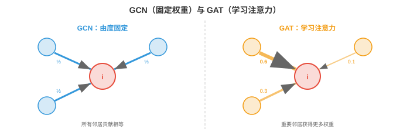

图注意力网络¶
图注意力网络用学习得到、依赖数据的权重替代统一的邻居聚合。本节介绍 GAT、多头图注意力、GATv2、图 Transformer、位置与结构编码以及可扩展性。
- 在第 3 节 GCN 中，每个节点使用由图结构，即归一化邻接矩阵，决定的固定权重聚合邻居特征。一个有 3 个邻居的节点会给每个邻居大致相同的权重，\(\approx 1/3\)。但并非所有邻居同样重要：来自密切合作者的消息应比来自远方熟人的消息更重要。
大白话
GCN 默认按连接数比较平均地听邻居说话，但真实关系中有的邻居更有用、有的只是噪声，不能一视同仁。
- 图注意力网络（Graph Attention Networks）使用支撑第 7 章 Transformer 的同一注意力机制，通过学习该关注哪些邻居来解决此问题。每个节点不再使用固定的、基于结构的权重，而是在邻居上计算动态的、基于内容的注意力得分。
大白话
GAT 会根据当前节点和邻居的特征决定谁更值得听，而不是只看图里有没有边。
GAT：图注意力网络¶
- GAT（Veličković 等，2018）计算每个节点与其邻居间的注意力系数。对于节点 \(i\) 和邻居 \(j\)：
大白话
这一步把节点 \(i\) 和邻居 \(j\) 的变换后特征拼起来打分，分数越高表示 \(j\) 对 \(i\) 越重要。
- 其中 \(W \in \mathbb{R}^{d' \times d}\) 是共享线性变换，\(\|\) 表示拼接，\(\mathbf{a} \in \mathbb{R}^{2d'}\) 是可学习注意力向量。得分 \(e_{ij}\) 衡量节点 \(j\) 的特征对节点 \(i\) 有多重要。
大白话
\(W\) 先把特征投到同一表示空间，\(\mathbf{a}\) 再学会怎样判断一对节点之间的相关性。
- 原始得分使用 softmax 在所有邻居上归一化：
大白话
softmax 把一组原始分数变成总和为 1 的权重，相当于把节点的关注额度分给各个邻居。
- 这确保每个节点邻域内的注意力权重之和为 1，正如第 7 章的 Transformer 注意力。节点更新后的特征为：
大白话
节点把每个邻居的特征乘上对应关注权重后相加，重要邻居对新表示的影响更大。

- 与 GCN 的关键差异是，权重 \(\alpha_{ij}\) 是从数据中学习的（learned from the data），不是由图结构固定的。节点可以学习聚焦最有信息的邻居，忽略噪声或无关邻居。
大白话
GAT 的关键不是多了一次加权，而是权重会随数据变：同一条边在不同上下文里可以重要，也可以不重要。
- 注意力只在边上计算，即节点 \(i\) 只关注其邻居 \(\mathcal{N}(i)\)，而非所有节点对。这使计算量与边数成比例，而不是与节点数平方成比例。
大白话
GAT 仍然只看已连接的邻居，所以比让每个节点都看全图便宜得多。
多头图注意力¶
- 正如第 7 章的 Transformer，多头注意力（multi-head attention）并行运行 \(K\) 个独立注意力机制，每个都有自己的参数 \(W^k\) 和 \(\mathbf{a}^k\)。结果在中间层拼接，在最终层求平均：
大白话
多头就是让多组注意力并行从不同角度看邻居，最后把各自发现合在一起。
- 每个头可以关注邻域的不同方面：一个头可能关注结构特征，另一个关注语义相似性。这与 Transformer 多头注意力的动机相同：不同头捕捉不同类型的关系。
大白话
一组注意力不必包办全部关系；不同头可以分别关心连接方式、内容相似性或其他线索。
- 有 \(K\) 个头且每个头的输出维度为 \(d'\) 时，拼接输出的维度为 \(K \times d'\)。最终层通常不拼接而取平均，以产生固定大小输出。
大白话
中间层拼接让特征更丰富，最后一层取平均则把多个头汇成固定长度的最终结果。
GATv2：修复静态注意力¶
- 原始 GAT 有一个微妙的限制：它的注意力函数是静态的（static），也称基于排序。注意力得分依赖拼接 \([W\mathbf{h}_i \| W\mathbf{h}_j]\)，但因为注意力向量 \(\mathbf{a}\) 在拼接后应用，它可分解为两个独立部分：\(\mathbf{a}^T [W\mathbf{h}_i \| W\mathbf{h}_j] = \mathbf{a}_1^T W\mathbf{h}_i + \mathbf{a}_2^T W\mathbf{h}_j\)。
大白话
原始 GAT 看似同时比较节点和邻居，但公式可以拆开，导致邻居排序的灵活性比想象中小。
- 这意味着给定节点 \(i\) 的邻居排序完全由邻居特征 \(\mathbf{h}_j\) 决定，项 \(\mathbf{a}_1^T W\mathbf{h}_i\) 在 \(i\) 的所有邻居间恒定。注意力排序并不真正依赖查询节点特征。节点 \(i\) 与节点 \(k\) 会将同一组邻居排序为相同顺序，限制了表达能力。
大白话
同一批邻居面对不同查询节点时，原始 GAT 可能仍给出同样的优先顺序，没能做到真正“因人而异”。
- GATv2（Brody 等，2022）通过在注意力向量之前应用非线性修复它：
大白话
GATv2 先让节点对的联合特征经过非线性加工，再打分，使“谁重要”真正依赖这两个节点的具体组合。
- 将 LeakyReLU 移到计算内部后，注意力得分成为联合特征的非线性函数，无法分解为独立项。这使注意力变为动态的（dynamic）：邻居排序如今依赖具体查询节点。GATv2 没有额外计算成本，却严格比 GAT 更有表达力。
大白话
这样同一个邻居对不同节点可以有不同重要性，而且几乎不增加计算成本。
图 Transformer¶
- 标准消息传递 GNN 受图拓扑限制：节点只能关注直接邻居。经过 \(k\) 层后，来自 \(k\) 跳邻居的信息已在多步聚合中混合，保真度下降。这一局部瓶颈，加上第 3 节的过平滑，限制了捕捉长距离依赖的能力。
大白话
普通 GNN 想知道远处节点的信息，必须一层层传递；传得远了容易混乱和失真。
- 图 Transformer（Graph Transformers）对所有节点对应用全局自注意力（global self-attention），无论它们是否共享边，从而打破该瓶颈。每个节点可以在单层中关注每一个其他节点，正如第 7 章标准 Transformer。
大白话
图 Transformer 允许节点一步直接看远处任何节点，不需要沿着边一跳一跳传。
- 基本思想是将所有节点视为词元，并应用 Transformer 自注意力：
大白话
这里完全沿用 Transformer 的注意力公式，只是序列里的词元换成了图里的节点。
- 其中 \(Q = XW_Q\)、\(K = XW_K\)、\(V = XW_V\) 是节点特征 \(X\) 的查询、键和值投影，与第 7 章完全相同。这是在完全连接图，即第 2 节完全图 \(K_n\) 上运行的 GNN。
大白话
每个节点都生成查询、键和值，并与全体节点比较；等价于临时把图看成人人互相可交流的完全图。
- 问题是完全连接图忽略了真实图结构：边信息，即实际谁与谁相连，丢失了。有两种方法恢复它：
大白话
全局注意力虽然看得远，却会忘记原图哪些节点原本相连，因此必须额外把结构线索塞回模型。
- Graphormer（Ying 等，2021）通过注意力得分中的偏置项（bias terms）将图结构注入 Transformer：
大白话
Graphormer 在普通注意力分数上额外加结构加分或减分，让距离近、边关系合适的节点更容易互相注意。
- 空间偏置 \(b_{\text{spatial}}\) 编码节点 \(i\) 与 \(j\) 间的最短路径距离；边偏置 \(b_{\text{edge}}\) 编码最短路径上的边特征。此外，Graphormer 使用中心性编码（centrality encoding），将节点度添加到输入嵌入，使模型获得各节点结构角色的信息。
大白话
结构信息包括相隔几跳、路径上有什么边、节点有多像枢纽；这些都是全局注意力本身看不出来的。
- GPS，即通用、强大、可扩展图 Transformer（General, Powerful, Scalable Graph Transformer，Rampášek 等，2022），在每层结合局部消息传递和全局注意力：
大白话
GPS 把“从直接邻居学到的局部信息”和“从全图注意力得到的远处信息”相加后再加工。
- 每层同时应用标准 GNN，用于局部结构，和 Transformer，用于全局上下文，再合并结果。这兼得二者之长：消息传递提供局部结构，注意力提供长距离依赖。
大白话
局部消息传递擅长尊重原图连接，全局注意力擅长跨远距离联系；GPS 让两者在每层协作。
位置与结构编码¶
- 序列上的 Transformer 使用第 7 章的位置编码注入顺序信息。图没有规范排序，因此需要图专用编码。
大白话
序列天然有第几个位置，图没有统一的“第几个节点”，所以图 Transformer 需要另一种表达位置和结构的方法。
- 拉普拉斯特征向量编码（Laplacian eigenvector encodings）将第 2 节图拉普拉斯矩阵的特征向量作为位置特征。最小的 \(k\) 个非平凡特征向量提供图的谱嵌入：图中“相近”的节点具有相似特征向量值。这些值与节点特征拼接。
大白话
拉普拉斯特征向量像给图节点安排一套由整体结构决定的坐标；结构相近的节点通常会得到相近坐标。
- 一个细节是，拉普拉斯特征向量具有符号歧义：若 \(\mathbf{u}\) 是特征向量，\(-\mathbf{u}\) 也是。模型必须对这些符号翻转不变。解决方法包括训练中使用随机符号翻转作为数据增强，或学习符号不变变换。
大白话
特征向量整体变号仍代表同一个方向，所以模型不能把正负号的任意翻转误认为结构变了。
- 随机游走编码（random walk encodings）计算从节点 \(i\) 出发的随机游走回到节点 \(i\) 的概率，经过 \(k\) 步，其中 \(k = 1, 2, \ldots, K\)。这些概率编码局部结构信息：稠密簇的节点回返概率高，稀疏区域节点的回返概率低。落点概率为 \(p_{ii}^{(k)} = (A_{\text{rw}}^k)_{ii}\)，其中 \(A_{\text{rw}} = D^{-1}A\) 是随机游走转移矩阵。
大白话
从一个节点随机走几步后还能回来的概率，可以透露它周围是紧密小圈子还是稀疏区域。
- 度编码（degree encodings）仅将节点度作为特征添加。这出乎意料地有效，因为度是强结构信号：叶节点，度为 1，桥接节点和枢纽节点行为不同。
大白话
光看一个节点连接了多少人，就能初步区分叶子、桥梁和枢纽等结构角色。
- 这些编码提供朴素 Transformer 缺少的结构信息，使图 Transformer 在需要长距离推理的任务上优于标准消息传递 GNN。
大白话
这些编码补上了图的“地图信息”，让全局注意力不仅看内容，也知道节点在结构中的位置。
可扩展性¶
- GNN 的根本可扩展性挑战在于：图可能有数百万节点、数十亿边。在完整图上训练 GNN 需要将所有节点特征和整个邻接矩阵存入内存，常常不可行。
大白话
图太大时，连整张图放进显存都困难，更不用说每次训练都让所有节点一起计算。
- GNN 的小批量训练（mini-batch training）比图像或序列更复杂，因为节点相互连接。天真地采样一批节点会需要它们的邻居，第 1 层；邻居的邻居，第 2 层；依此类推。这种邻域爆炸（neighbourhood explosion）意味着一批 1,000 个目标节点可能需要计算图中的数百万节点。
大白话
图像取一个小块就够了，图里取几个节点却会连带拉进它们的邻居、邻居的邻居，数量很快爆炸。
- 邻域采样（neighbourhood sampling），GraphSAGE 风格，见第 3 节，通过每层为每个节点采样固定数量邻居，限制爆炸。使用 2 层、每层采样 15 个时，每个目标节点子图最多有 \(15^2 = 225\) 个节点，与完整图规模无关。
大白话
每层只抽固定数量邻居，就把每个目标节点的计算范围锁在一个可控的小子图里。
- Cluster-GCN（Chiang 等，2019）使用图聚类算法，如 METIS，将图划分为多个簇，再一次只在一个簇上训练。簇内边稠密，大多数邻居位于同一簇，因此子图可捕捉相关结构。跨簇边通过偶尔纳入簇间边处理。
大白话
Cluster-GCN 先把大图切成几个关系紧密的小块，每次只训练一块，既省内存又尽量保留局部关系。
- 图 Transformer 的可扩展性更困难，因为全局注意力是 \(O(n^2)\)。对于数百万节点的图，完整注意力不可行。解决方案包括：
-
稀疏注意力模式，只关注图中 \(k\) 个最近节点。
大白话
不让每个节点看全体，只看少数相关节点，把比较次数从平方级压下来。 - 线性注意力近似。
大白话
用近似算法重排计算，让注意力成本更接近节点数的一次方。 - 将局部消息传递，成本低，为 \(O(|E|)\)，与粗化图上的全局注意力，节点更少，结合。
大白话
大部分工作用便宜的局部传播完成，只有在缩小后的图上做全局注意力。
-
时序与动态图¶
- 迄今研究的图是静态的（static）：节点、边和特征固定不变。但许多现实图随时间演化（evolve over time）：新用户加入社交网络，金融交易创建边，全天交通模式变化，分子相互作用波动。
大白话
现实关系网不是一张永远不变的照片，而是一段不断新增、删除和变化的录像。
- 时序图（temporal graph）为每条边附加时间戳：\((i, j, t)\) 表示节点 \(i\) 与节点 \(j\) 在时刻 \(t\) 交互。挑战在于学习同时捕捉图结构和时间动态的表示。
大白话
时序图除了记录谁和谁有关系，还记录关系什么时候发生；模型必须同时理解结构和先后顺序。
- 有两种范式：
大白话
一种把时间切成一帧一帧的快照，另一种把每次交互作为实时事件处理。
- 离散时间动态图（Discrete-time dynamic graphs, DTDG）：将图表示为快照序列 \(G_1, G_2, \ldots, G_T\)，每个时间步一个。GNN 处理每个快照，RNN 或时间注意力机制捕捉快照间演化。它很简单，但会丢失细粒度时序信息，快照之间的事件会丢失，并且需要选择快照频率。
大白话
DTDG 像定时拍照：实现简单，但两次拍照之间发生的细节可能被漏掉，拍照间隔也需要人为决定。
- 连续时间动态图（Continuous-time dynamic graphs, CTDG）：事件被建模为带时间戳交互流。每个事件 \((i, j, t)\) 在它发生的确切时刻更新节点 \(i\) 和 \(j\) 的表示，从而保留全部时间信息。
大白话
CTDG 不等下一张快照，而是哪件事发生就立刻更新，因此保留了事件的精确时间。
- 时序图网络（Temporal Graph Network, TGN）（Rossi 等，2020）是领先的 CTDG 架构。每个节点维护一个记忆状态（memory state） \(\mathbf{s}_i(t)\)，在节点参与交互时更新：
大白话
TGN 给每个节点配一份会随事件更新的记忆，像用户的近期行为档案，而不是每次从零开始认识它。
- 其中 \(\mathbf{m}_i(t)\) 是根据交互计算出的消息，结合两个节点的特征、边特征与时间编码。第 6 章的 GRU 选择性保留和遗忘过去信息，使记忆既能捕捉长期模式，又能适应近期事件。
大白话
GRU 会决定哪些旧信息留下、哪些忘掉，再把本次交互和时间一起写进节点记忆。
- 时间编码（time encoding）将自上次交互以来的经过时间表示为特征向量，类似第 7 章 Transformer 中的位置编码。常用方法是可学习 Fourier 特征：
大白话
时间编码把“距离上次互动多久”变成模型能处理的周期特征，不让 5 分钟和 3 个月看起来一样。
- 这使模型能丰富地表示时间间隔：“这个用户上次活跃在 5 分钟前”和“3 个月前”会得到不同嵌入。
大白话
同样一次点击，刚刚发生和很久以前发生，意义可能不同；时间编码把这种新旧差别保留下来。
- 时序图注意力（Temporal Graph Attention, TGAT）在节点的时间邻域上应用自注意力，即最近交互的集合。每条交互既按特征相关性，类似 GAT，也按时间新近性加权。久远过去的交互会自然被降权。
大白话
TGAT 会同时考虑“这条关系内容是否相关”和“它离现在有多近”，旧消息通常会逐渐降低影响。
- 应用包括欺诈检测，金融图中的异常交易模式；交通预测，根据历史流量模式预测拥堵；社交网络动态，预测病毒式内容传播；以及随时间进行的药物相互作用预测。
大白话
只要关系会随时间变化，时序图就有用：交易风控、拥堵预测、内容传播和药物相互作用都属于这类问题。
编程任务（使用 CoLab 或 Notebook）¶
-
从零实现单个 GAT 注意力头。计算节点与邻居间的注意力权重，并验证它们之和为 1。
import jax import jax.numpy as jnp rng = jax.random.PRNGKey(0) k1, k2, k3 = jax.random.split(rng, 3) n_nodes, d_in, d_out = 5, 4, 3 # Random node features H = jax.random.normal(k1, (n_nodes, d_in)) # Learnable parameters W = jax.random.normal(k2, (d_in, d_out)) * 0.5 a = jax.random.normal(k3, (2 * d_out,)) * 0.5 # Adjacency (node 0 connects to 1, 2, 3) neighbours_of_0 = [1, 2, 3] # Transform features Wh = H @ W # (n_nodes, d_out) # Compute attention scores for node 0 h_i = Wh[0] scores = [] for j in neighbours_of_0: h_j = Wh[j] e_ij = jnp.dot(a, jnp.concatenate([h_i, h_j])) e_ij = jax.nn.leaky_relu(e_ij, negative_slope=0.2) scores.append(float(e_ij)) scores = jnp.array(scores) alpha = jax.nn.softmax(scores) print(f"Raw scores: {scores}") print(f"Attention weights: {alpha}") print(f"Sum of weights: {alpha.sum():.4f}") # Weighted aggregation h_new = sum(alpha[k] * Wh[neighbours_of_0[k]] for k in range(len(neighbours_of_0))) print(f"Updated node 0 features: {h_new}") -
比较 GCN，固定权重，和 GAT，学习权重，的聚合。展示 GAT 可以为邻居分配不同权重，而 GCN 对它们一视同仁。
import jax import jax.numpy as jnp # 4 nodes: node 0 connects to 1, 2, 3 A = jnp.array([[0,1,1,1], [1,0,0,0], [1,0,0,0], [1,0,0,0]], dtype=float) # Features: node 1 is very relevant, node 2 is noise, node 3 is moderate H = jnp.array([[0.0, 0.0], # node 0 [1.0, 0.0], # node 1 (signal) [0.0, 0.0], # node 2 (noise) [0.5, 0.0]]) # node 3 (moderate) # GCN: normalised adjacency weights A_hat = A + jnp.eye(4) D_inv = jnp.diag(1.0 / A_hat.sum(axis=1)) gcn_weights = (D_inv @ A_hat)[0] # weights for node 0 print(f"GCN weights for node 0: {gcn_weights}") print(" → All neighbours get roughly equal weight") # GAT: learned attention (simulated) # Suppose the attention mechanism learns to focus on node 1 gat_weights = jnp.array([0.1, 0.7, 0.05, 0.15]) # learned print(f"\nGAT weights for node 0: {gat_weights}") print(" → Node 1 (informative) gets most attention") gcn_output = gcn_weights @ H gat_output = gat_weights @ H print(f"\nGCN output: {gcn_output} (diluted by noise)") print(f"GAT output: {gat_output} (focused on signal)") -
演示位置编码的收益。为图计算拉普拉斯特征向量编码，并展示结构相似节点得到相似编码。
import jax.numpy as jnp import matplotlib.pyplot as plt # Barbell graph: two cliques connected by a bridge n = 10 A = jnp.zeros((n, n)) # Clique 1: nodes 0-4 for i in range(5): for j in range(i+1, 5): A = A.at[i,j].set(1).at[j,i].set(1) # Clique 2: nodes 5-9 for i in range(5, 10): for j in range(i+1, 10): A = A.at[i,j].set(1).at[j,i].set(1) # Bridge A = A.at[4,5].set(1).at[5,4].set(1) D = jnp.diag(A.sum(axis=1)) L = D - A eigenvalues, eigenvectors = jnp.linalg.eigh(L) # Use first 3 non-trivial eigenvectors as positional encoding pe = eigenvectors[:, 1:4] print("Laplacian Positional Encodings:") for i in range(n): group = "Clique 1" if i < 5 else "Clique 2" bridge = " (bridge)" if i in [4, 5] else "" print(f" Node {i} ({group}{bridge}): {pe[i]}") plt.scatter(pe[:5, 0], pe[:5, 1], c="#3498db", s=80, label="Clique 1") plt.scatter(pe[5:, 0], pe[5:, 1], c="#e74c3c", s=80, label="Clique 2") plt.scatter(pe[[4,5], 0], pe[[4,5], 1], c="black", s=120, marker="*", label="Bridge nodes", zorder=5) plt.legend(); plt.grid(True) plt.title("Laplacian Eigenvector Positional Encodings") plt.xlabel("Eigenvector 1"); plt.ylabel("Eigenvector 2") plt.show()